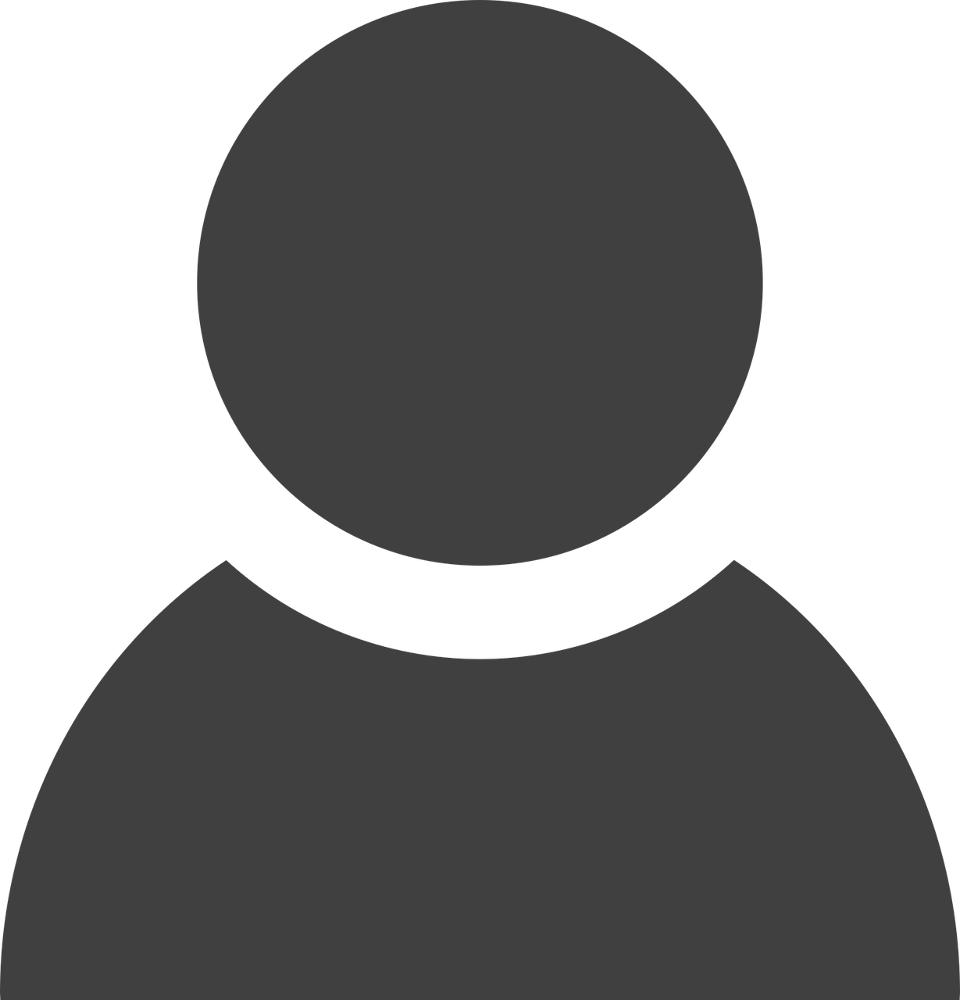
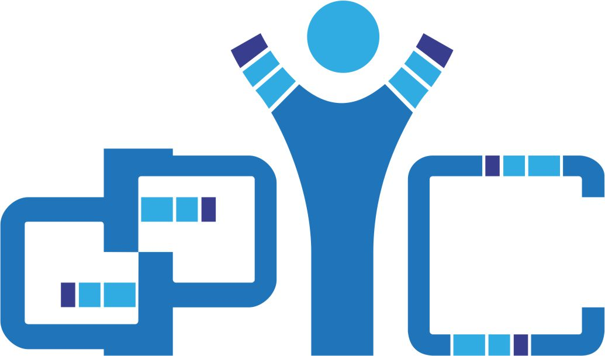
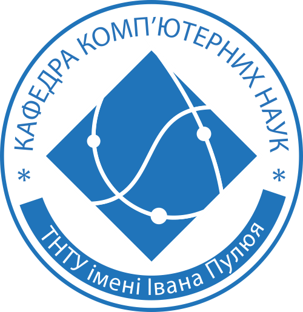

Тернопільський національний технічний університет ім. Івана Пулюя
Факультет ФІС
Кафедра комп’ютерних наук


Персональна сторінка
Шумейко Владислав
група СП-33
Біографія
Привіт! Мене звати Владислав, і я студент Тернопільського національного технічного університету імені Івана Пулюя. Наразі я здобуваю вищу освіту у сфері інформаційних технологій та є активним учасником групи СП-33. Моє захоплення комп'ютерними науками почалося ще в школі, і з того часу я постійно розвиваю свої навички в програмуванні, веб-розробці та проєктуванні баз даних. Моя головна мета — стати висококваліфікованим Software Engineer та створювати інноваційні продукти, які приноситимуть користь людям. Я цілеспрямована, відповідальна людина, яка завжди відкрита до нових знань, цікавих челенджів та командної роботи.